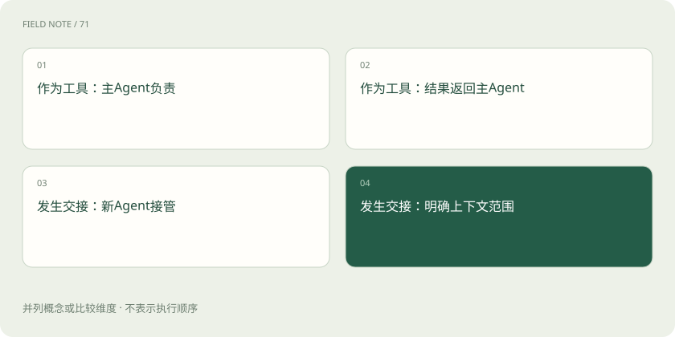
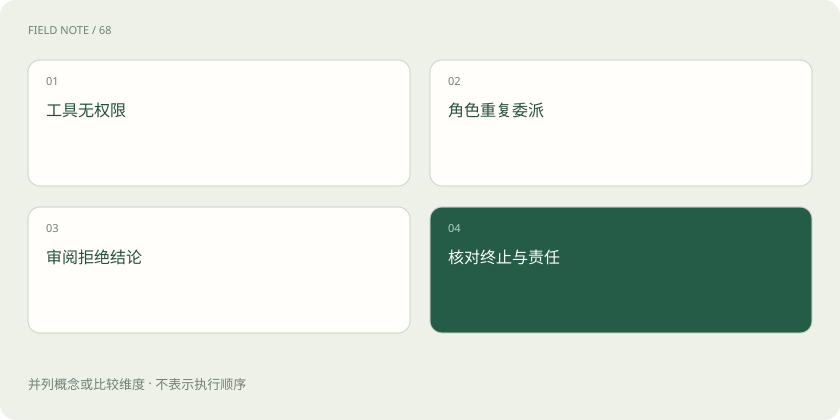

先读哪些知识
先用一个类比理解
类比只帮助建立直觉，不等同于技术的完整机制。
一图看懂
别从“支持多 Agent”开始
设想要分析一批退款投诉：先查订单与政策，再形成原因分析，最后交给主管复核。这里需要的是可信数据、责任交接与可复核结果；把三个提示词命名为调查员、分析员和主管，并不会自动得到更可靠的系统。
比较框架应先问：谁控制下一步，交接时带什么状态，失败后从哪恢复，工具执行由谁授权。如果任务实际上只需一次检索和一次总结，单 Agent 加固定流程可能更省心，多角色的通信反而增加延迟与歧义。
OpenAI Agents SDK 的轻量循环
Agents SDK 提供 Agent、工具、交接及相关运行与追踪能力，可以用较少核心概念组织工具循环。交接适合把处理责任转到另一个专长角色；把一个 Agent 包装成工具，则更像当前负责者调用专门能力后继续掌控结果。
在退款案例中，主助手可调用政策分析工具后继续回答，也可把用户交给专门处理争议的角色。两者的用户体验和上下文责任不同，不能只因为都出现第二个 Agent，就当成同一种协作方式。
CrewAI 的角色与流程
CrewAI 用角色、任务与协作团队表达分工，同时提供 Flows 等流程组织能力。它适合把研究、整理和审阅等职责写得清楚，但角色描述只是工作的表达方式，无法保证每个角色具有独立知识或真正独立的判断。
若分析员和审阅员使用相同资料与相似提示，它们可能共同重复同一错误。主管环节必须验证订单证据、退款政策适用日期和计算结果，而不是简单评价前一段文字“看起来专业”。
图解：工具调用与责任转交

ADK 与运行服务边界
Google ADK 提供构建和运行 Agent 的组件，并关注工具、会话及多 Agent 工作流等开发环节。它不是只能调用某一种模型的同义词；选型仍应核对实际语言实现、模型适配与部署环境，而不能由品牌直接推断兼容范围。
退款业务如果需要稳定保存用户会话，应检查会话服务如何落地；若要部署到已有容器平台，要确认运行服务如何接收身份、记录事件和暴露健康状态。这些才是接入企业应用的具体成本。
smolagents 的代码行动
smolagents 以轻量 Agent 设计和代码式行动等能力见长。模型生成代码可以组合多次数据操作，减少每个小步骤单独往返的负担；但生成代码属于可执行内容，执行器、依赖和网络访问必须受到真实环境约束。
例如批量汇总投诉可以让受限执行器处理脱敏表格，却不应把生产订单数据库的写权限一并交给任意生成代码。支持代码行动与获得安全执行环境是两件事，不能把库的简洁当成沙箱已经完备。
AutoGen 要按当前状态理解
AutoGen 对多 Agent 消息与协作模式具有重要影响，但截至本章核验时，官方仓库顶部和主体明确说明项目已归档、不再由 Microsoft 维护，并建议新项目使用 Microsoft Agent Framework；旧教程不能代表当前项目路线。
README 的部分历史段落仍保留 maintenance mode 等描述，因此应优先参考当前归档声明。已有系统需要评估迁移，而不是因为旧案例很多就默认它仍是新项目的长期维护选择。本章不把替代框架的市场宣传当作实际迁移已经无成本。
让同一组故障参与比较
用同一批脱敏投诉验证几个候选：政策检索超时、订单查无权限、分析角色重复委派、主管拒绝建议。记录最终责任者、调用次数、重复动作和用户看到的失败解释，才能比较运行行为而非展示效果。
追踪界面也要核对敏感数据处理。完整调用记录有助于排错，却可能保存客户姓名和订单内容。框架提供可观测性入口，不等于团队可以无限保存所有原始输入，应按业务要求设置脱敏与保留策略。
图解：选型的失败验收

落到可维护的最小选择
选择与你现有语言、部署方式和任务控制需求相符的框架。需要显式长流程恢复时，额外核对持久化语义；重视多角色表达时，检查交接结构；只做简单模型调用时，直接 SDK 是完全合理的替代。
自检问题是：两个角色都说退款合理，是否算双重核验？答案取决于它们是否检查了独立事实与规则，而不是角色数量。有效复核应能指出政策版本、订单金额与适用条件，并在证据缺失时拒绝扩大结论。
放在一起对比
| 框架 | 主要表达方式 | 优先验证 |
|---|---|---|
| Agents SDK | Agent、工具与交接 | 控制权与上下文传递 |
| CrewAI | 角色、任务、Crew及Flow | 角色输出是否有实证 |
| ADK | Agent与运行组件 | 会话与部署集成 |
| smolagents | 轻量循环与代码行动 | 受限执行器 |
| AutoGen | 历史多Agent架构 | 归档状态与迁移方案 |
放进真实场景
设想要分析一批退款投诉：先查订单与政策，再形成原因分析，最后交给主管复核。这里需要的是可信数据、责任交接与可复核结果；把三个提示词命名为调查员、分析员和主管，并不会自动得到更可靠的系统。
别踩这个误区
想一想
两个角色使用同一份错误资料并一致同意，能当成独立验证吗？
不能。角色数量不代表证据独立性，复核必须检查事实来源、规则适用条件与可验证结果。
关联阅读
资料与边界
本文为原创知识讲解。类比和图示经过简化；示例数字不代表实测或报价。整理日期：2026-11-04。文末列出对应技术的原始资料，具体功能与版本支持请以原文为准。
按完整目录逐篇阅读